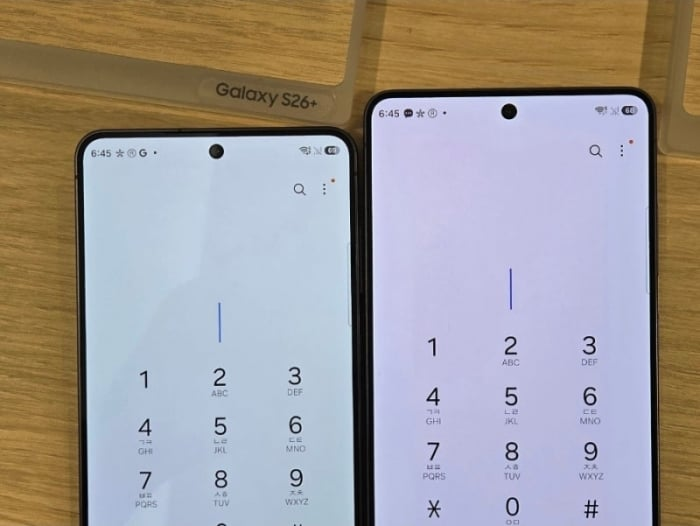
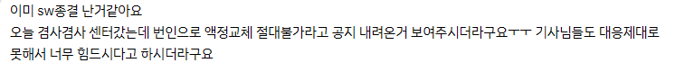
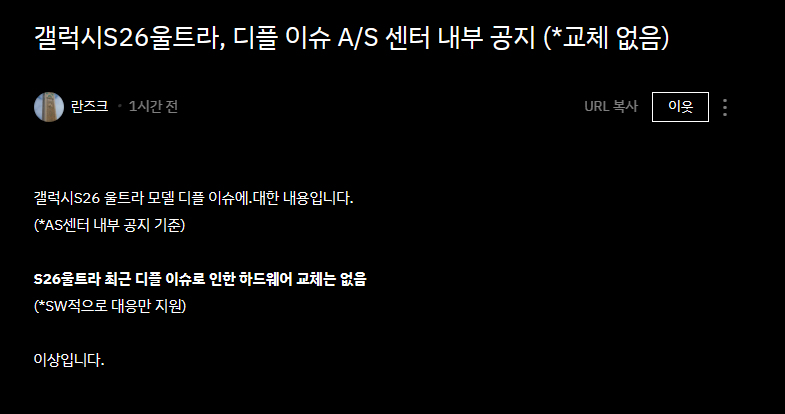

S26울트라가 발매이후 화면에 붉은 얼룩이 나타 난다고
이야기가 나와서 계속이야기가 많았음.
왜냐하면 오래쓰지도 않은게 마치 번인 처럼 나타난다고 해서
번인 이슈라고도 하는데
이문제에 대해서 삼성측이 맨처음엔 '이거 H/W 결함아니니 S/W로 패치하면 됨ㅇㅇ' 하다가
오히려 패치 진행후 더심해진 기기가 나와서 해당펌웨어를 내렸음. 지금은 다시 돌아온걸로앎
그리고 이 일이 있었는지 얼마 지나지 않아서
삼성 A/S 센터쪽에 삼성쪽 내부 지시가 내려왔는데

삼성 커뮤니티 에서 삼성 A/S 센터에 공지가 내려왔는데
'해당 증상은 정상이고 S/W패치로만 대응하라' 라고 이야기를 들었다는 사람들이 출몰하기 시작함

https://blog.naver.com/yeux1122/224408390924
국내에서 가장 타율이 높은 인사이더가
센터 지침이 내려온게
S/W로만 대응하라고 한게 맞다고 확인 사살함
에휴 ㅋㅋ